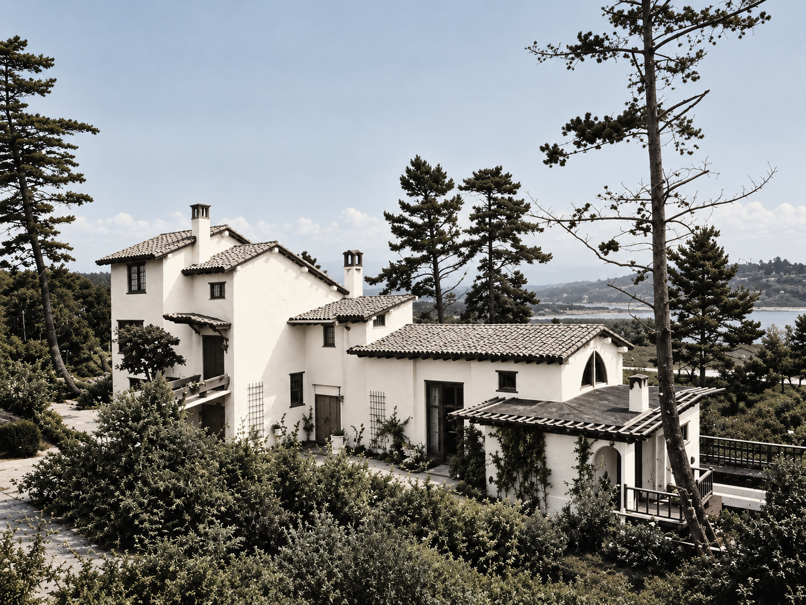

17 Mile Drive House
Pebble Beach, California
History
On March 26, 1922, Byington Ford and Marion Boisot Ford, developed plans for a new Spanish-style residence in Pebble Beach, California.[i] Designed by noted American architect Bernard R. Maybeck, the house was completed in 1924.[ii][iii] Situated along the 17-Mile Drive, the residence overlooked the first green of the Pebble Beach golf course. The home was later enlarged by architect William H. Toepke.[iv]
Patricia Ford lived with her family in Pebble Beach, California, for ten years, from 1924 to 1934. The family lived in a large Spanish Colonial-style house on 17-Mile Drive, overlooking the first hole of the Pebble Beach golf course. Patricia and her sisters spent much of their childhood around the golf course, where they often visited the caddies and practiced their putting. They also made frequent trips to the beach with their governess, Mademoiselle Beeson.
The house was divided into two sections, creating separate living areas for the family.[v] Patricia and her two sisters lived at one end with their governess, while their parents occupied the other end. The home also had a piano, which became part of the family's musical life. Patricia's uncle, Tirey L. Ford Jr., was an accomplished pianist and enjoyed playing “I'll Get By (As Long as I Have You),” a popular song published in 1928.[v]


Referenes
[i] San Francisco Chronicle, p. 51, March 26, 1922.[ii] The Argonaut, vols. 90–91, 1922, San Francisco.
[iii] Architect and Engineer, January 1925, Architect and Engineer, Inc., San Francisco, pp. 80–81.
[iv] Historic Context Statement (1919–1945), Pebble Beach, California, p. 90.
[v] Pebble Beach Historic Context Statement, Monterey County, California, August 29, 2013.

Last update: October 4, 2026